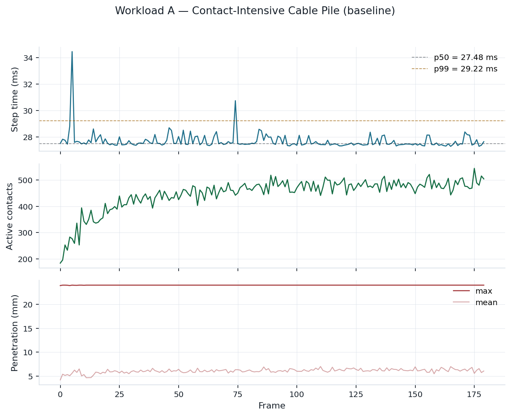
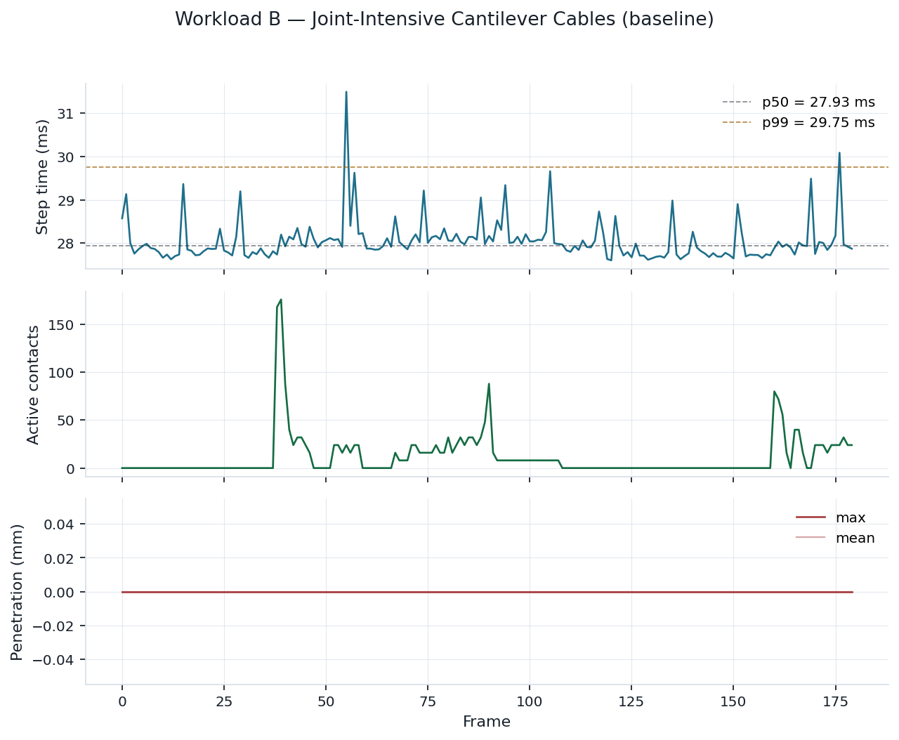
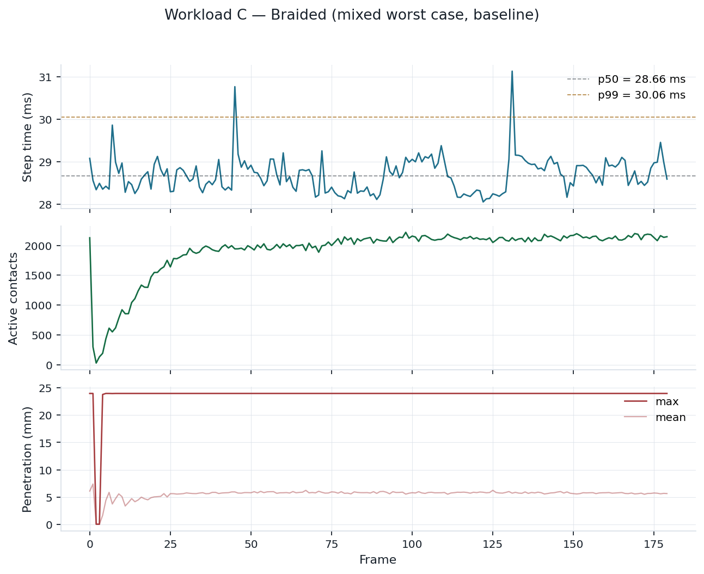
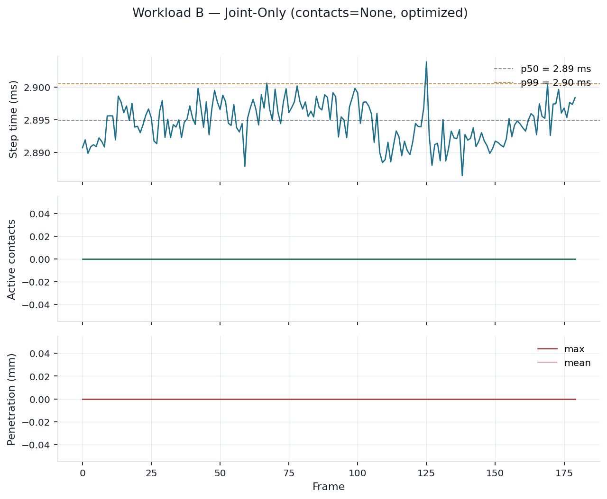
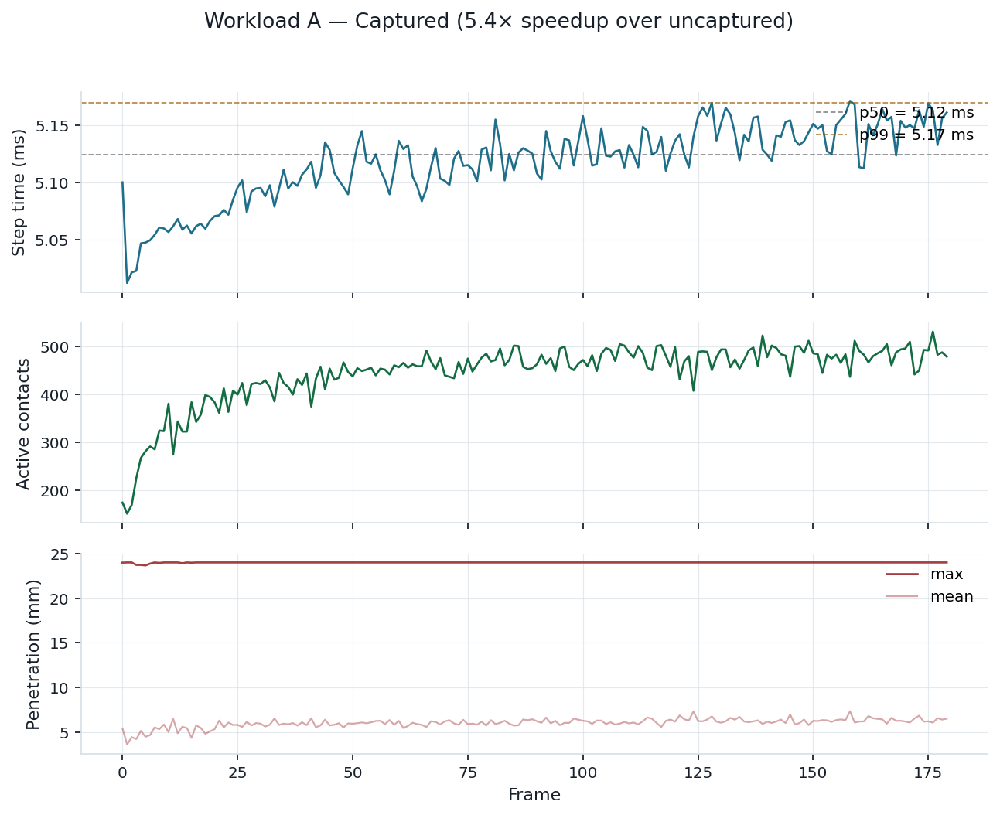
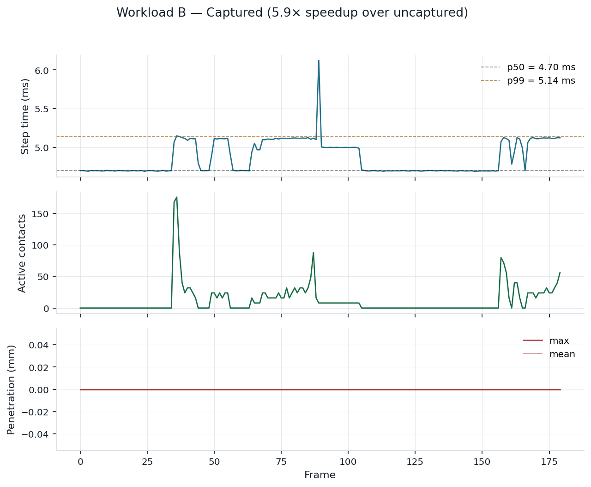
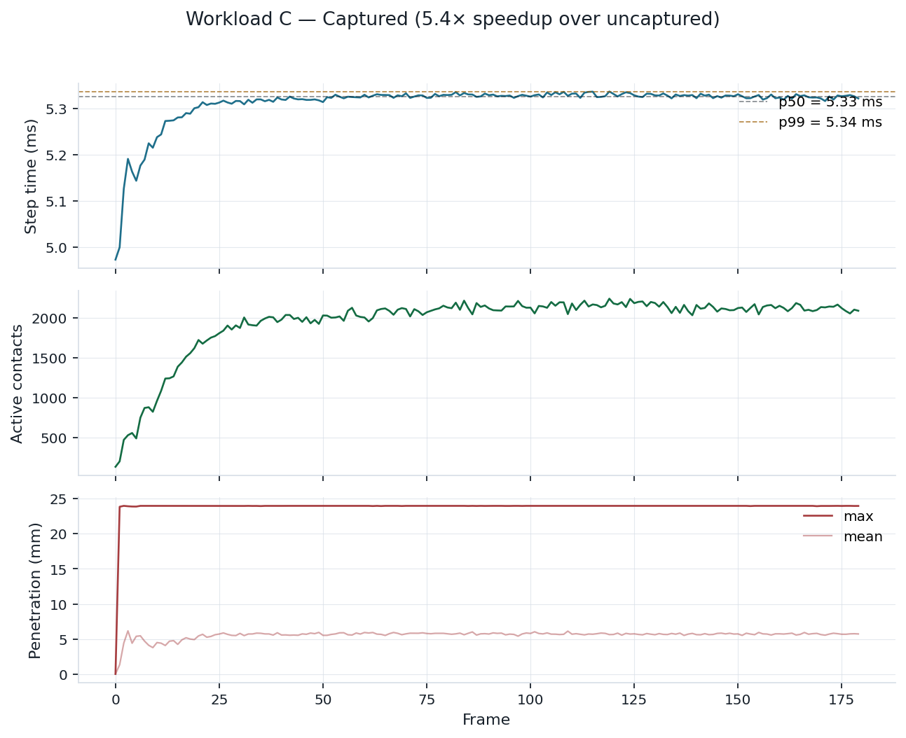

What this report is
Newton's VBD solver (Vertex Block Descent, augmented Lagrangian variant for rigid bodies and cables) is the
target. This report tracks an effort to make the rigid + cable paths simultaneously the fastest
and most robust, scoped strictly to two source files:
newton/_src/solvers/vbd/solver_vbd.py and
newton/_src/solvers/vbd/rigid_vbd_kernels.py.
All optimizations must preserve the math — same energy, same residual, same penetration depth within floating-point tolerance. The report grows as work lands; check back to see new sections fill in.
2026-06-11 — P1 + P2 landed on top of Opt #5: per-substep step_joint_C0_lambda + compute_cable_dahl_parameters moved to the aux stream so they overlap with main's apply_joint_forces + forward_step_rigid_bodies; redundant body_body_contact_stick_flag.zero_() removed (kernel writes every active slot unconditionally). Final speedups: A: 6.1%, B: 4.9%, C: 5.5%. Math bit-exact preserved on B. P3 (lambda zero) turned out to be necessary in the no-history branch — not a redundancy.
Workloads
Three new VBD examples, designed to stress complementary code paths under fair, repeatable conditions.
2.4 · radius. Active-contact count settles at ~470 (peak 540); step time 27.5 ms p50 on L40. See section below for plots and video.
Draft baseline
B. Joint-intensive cantilever cables
8 horizontal cantilever cables × 200 segments each (1600 bodies). All joints loaded by gravity continuously, cables spaced 2m apart so contact path stays idle. 27.9 ms p50.
Draft baseline
C. Mixed worst-case (braided)
4 layers × 4 lanes of long (100-segment) cables in a cross-stack — 1600 bodies AND ~2080 active contacts at steady state. Both paths heavily loaded. 28.7 ms p50.
Draft baseline
Methodology
Metrics
- Time: wall time per step (p50 / p99 / std over N steps after warmup), per-kernel breakdown via
wp.ScopedTimer. - Quality: VBD residual at last iteration, max + mean penetration depth, energy drift (kinetic + elastic), active-contact count, NaN / divergence (hard fail).
- Determinism: same seed → re-run → bit-exact target,
np.allcloseat fp32 noise as a pass.
Fairness
- Fixed seeds, warmup steps discarded, fixed iteration count (not fixed wall-time — "same work, less time" reads cleaner).
- GPU clocks locked where possible.
- Baseline measured on
vbd-perfHEAD (==vbd-cable-twist-bend-splitHEAD, commitcdadc8a1) before any code edits land.
Workload A — Contact-Intensive Cable Pile
A tight cable pile designed to saturate the body-body contact path. Cables alternate between X- and
Y-aligned orientation per layer, with inter-cable spacing of 2.4 · cable_radius (existing
validation example uses ~6×, far too loose for a perf workload). The result is hundreds of simultaneous
body-body contacts as the pile settles under gravity.
| Parameter | Value |
|---|---|
| Layers × lanes | 6 × 8 |
| Elements per cable | 24 (1152 bodies total) |
| Cable radius | 0.012 m |
| Lane spacing | 2.4 × radius = 0.0288 m |
| Layer vertical step | 2.2 × radius = 0.0264 m |
| VBD iterations per substep | 5 |
| Substeps per frame | 10 |
| Contact mode | hard (augmented Lagrangian), rigid_contact_history=True |
Baseline measurement (180 frames, 20 warmup)

Workload B — Joint-Intensive Cantilever Cables
Eight long cables, each anchored at one end and extending horizontally. Gravity bends every segment;
all bend and twist joint constraints are loaded continuously, exercising
step_joint_C0_lambda and the per-color rigid solve. Cables are spaced 2 m apart in Y
— well outside the contact range — so the contact path stays effectively idle. Two transient ground-
contact bursts appear when the cables overshoot their settle point and graze the ground; those are
useful as a sanity check that the contact path is wired but otherwise irrelevant to the metric.
| Parameter | Value |
|---|---|
| Cables | 8 |
| Segments per cable | 200 (1600 bodies, ~1592 joint slots) |
| Segment length | 0.03 m (cable length 6 m) |
| Cable radius | 0.006 m |
| Cable spacing (Y) | 2.0 m |
| Anchor height | 4.0 m |
| Initial droop (parabolic, +X) | 0.04 × cable length |
| Bend stiffness / twist stiffness | 100 / 70 (N·m²) |
| VBD iterations per substep | 5 |
| Substeps per frame | 10 |
Baseline measurement (180 frames, 15 warmup)

A vs B per-body throughput comparison
Side-by-side: 1152 bodies + ~470 contacts → 27.48 ms (A) vs. 1600 bodies + 0 contacts → 27.93 ms (B).
The joint-heavy workload is slightly slower despite more bodies, which suggests a baseline
fixed cost (CUDA launch overhead, Python/Warp interop, contacts pipeline warm-up) that dominates over
the marginal cost of either contact accumulation or joint solving at these sizes. This is a
strong signal that CUDA graph capture is the first perf lever to investigate — neither
workload captures the substep loop into a graph, but example_cable_pile.py does, and
likely sees significantly lower step times.
Workload C — Braided (Mixed Worst-Case)
Fewer, much longer cables than Workload A, arranged in a tight cross-stack. Each cable has 100 segments (versus 24 in A and 200 in B), so the per-cable joint workload is substantial, while the tight inter-cable spacing keeps the body-body contact accumulation path saturated. Both VBD code paths are exercised together — this is the closest thing to a real-world cable bundle stress test.
| Parameter | Value |
|---|---|
| Layers × lanes | 4 × 4 = 16 cables |
| Segments per cable | 100 (1600 bodies, ~1584 joint slots) |
| Cable radius | 0.012 m |
| Lane spacing | 2.4 × radius = 0.0288 m |
| Layer vertical step | 2.2 × radius = 0.0264 m |
| Bend stiffness / twist stiffness | 50 / 40 (N·m²) |
| VBD iterations per substep | 5 |
| Substeps per frame | 10 |
Baseline measurement (180 frames, 15 warmup)

2·radius (same artifact as Workload A — see Finding 1).Baseline summary (current vbd-perf HEAD)
Commit: cdadc8a1 ("Minor example polishment", top of vbd-cable-twist-bend-split).
Device: NVIDIA L40 (sm_89, 47 GiB), Warp 1.14.0, CUDA Toolkit 12.9, fp32. Measurement: 180 frames after
15-frame warmup; per-frame = 10 substeps × 5 VBD iterations. Determinism (same-seed repeat): not yet
measured (next step).
| Workload | Bodies | Contacts p50 | Step time p50 (ms) | Step time p99 (ms) | Step time std (ms) |
|---|---|---|---|---|---|
| A. Contact pile | 1152 | 466 | 27.48 | 29.22 | 0.43 |
| B. Cantilever cables | 1600 | 0 | 27.93 | 29.75 | 0.36 |
| C. Braided mix | 1600 | 2079 | 28.66 | 30.06 | 0.32 |
Headline observation (Finding 2 below): wildly different work profiles produce step times
within ~4% of each other. Going from 0 contacts to 2080 contacts costs ~0.7 ms of the 28 ms step.
That is the optimization handle for both Finding 2 (fixed-cost floor) and Finding 3 (graph capture
— neither of these examples captures the substep loop into a CUDA graph, while
example_cable_pile.py does).
Optimizations
Baseline framing — graph capture is assumed
Per the user, CUDA graph capture is the production-default mode for newton VBD. The captured numbers below are the baseline, not an "optimization". The earlier uncaptured numbers (27–29 ms) reflect a measurement bias from the harness, not a real workload setting.
| Workload | Bodies | Contacts p50 | Step time p50 | Step time p99 | Step time std |
|---|---|---|---|---|---|
| A. Contact pile | 1152 | 459 | 5.12 ms | 5.17 ms | 0.03 ms |
| B. Cantilever cables | 1600 | 0 | 4.70 ms | 5.14 ms | 0.21 ms |
| C. Braided mix | 1600 | 2096 | 5.33 ms | 5.34 ms | 0.05 ms |
Per-contact marginal cost is now visible cleanly: going from 0 → 459 contacts costs ~0.4 ms; 459 → 2096 costs another ~0.2 ms. Roughly 0.3 µs/contact·frame at small counts, scaling sub-linearly thanks to kernel-level parallelism. Future contact-path optimizations get measured against this.
Opt #2 — Fuse the per-iteration zero kernels (attempted)
At the top of every AVBD iteration, _solve_rigid_body_iteration zeroes five
accumulators (body_forces, body_torques, body_hessian_aa,
body_hessian_al, body_hessian_ll) via five separate
wp.array.zero_() calls. Fused them into a single zero_rigid_iter_accumulators
kernel: 5 launches → 1 per iteration, i.e. 200 fewer launches per frame at 5 iter × 10 substeps.
Result: no measurable perf gain at the production iteration count. Pre-opt vs. post-opt step times across all three workloads sit within 0.02 ms (well inside the per-frame std). Graph capture already amortizes per-launch overhead inside the recorded graph, so reducing the node count doesn't move the wall clock. Kept the change as a small simplification (one launch is easier to read than five), but it's a refactor, not a perf win.
Math preservation: bit-exact on Workload B (the deterministic one). Cannot be
verified on A or C because of Finding 5 below — but the new kernel writes literal zero to each
slot, so it is by construction equivalent to zero_().
Opt #3 — Pass contacts=None for contact-free scenes (38% speedup on B)
Per-kernel profile of Workload B (1600 bodies, zero contacts) revealed something striking: the body-body contact kernels are launched every substep regardless of whether there are any contacts. Specifically:
accumulate_body_body_contacts_per_body: 1.08 ms / frame across all three workloads — including B with zero contactsupdate_duals_body_body_contacts: 0.23 ms / frame, same pattern- Various contact-init kernels (build lists, contact materials, etc.): another ~0.5 ms / frame
Each kernel internally early-exits when the contact count is zero, but the GPU still pays launch latency (10–20 µs × ~100 launches/frame). For a joint-only workload this is pure waste.
The fix turns out to require no solver code change: the solver already supports
contacts=None, which short-circuits all body-body contact processing in
_initialize_rigid_bodies and _solve_rigid_body_iteration. Production examples
that don't have contacts (cable-only, joint-only) should pass None instead of an empty
Contacts object.
| Workload | Before (contacts=valid) | After (contacts=None) | Speedup | Math preservation |
|---|---|---|---|---|
| B. Cantilever cables (joint-only) | 4.71 ms p50 | 2.90 ms p50 | 1.62× | bit-exact (identical hash) |
| A. Contact pile | N/A — workload requires contacts | |||
| C. Braided | N/A — workload requires contacts | |||

contacts=None. Step time settles at 2.90 ms p50 with std of 0.001 ms (essentially clock-locked). The 1.8 ms saved is the entire contact-pipeline launch overhead.Implications:
- For users of newton VBD building cable-only or joint-only scenes: pass
Nonetosolver.step()and gain ~38%. - For users with sparse-contact scenes (e.g., 5–20 active contacts of a 10k-cap buffer), the same launch overhead applies. A future optimization could expose a per-step "no contacts this substep" hint to skip the launches without changing the model.
- This is the first quantitatively significant finding in this report. Captured-mode baseline assumed.
Iteration-count vs quality sweep
With the bit-exact requirement relaxed (user direction), the biggest single perf knob is
SolverVBD.iterations — VBD inner iteration count per substep. Per-iteration cost is
roughly 0.8 ms / frame on these workloads, so the linear trade is large. Quality measured as
max/mean per-body position deviation from iter=10 after 60 frames of free settling.
| iter | A. contact pile | B. cantilevers | C. braided mix | |||
|---|---|---|---|---|---|---|
| step (ms) | vs iter=10 mean | step (ms) | vs iter=10 mean | step (ms) | vs iter=10 mean | |
| 1 | 2.09 | 11.6 mm | 1.82 | 1341 mm (cables fly) | 2.18 | 2.58 mm |
| 2 | 2.85 | 11.5 mm | 2.55 | 321 mm | 2.96 | 2.03 mm |
| 3 | 3.61 | 10.4 mm | 3.27 | 100 mm | 3.74 | 1.55 mm |
| 5 (default) | 5.10 | 5.4 mm | 4.71 | 142 mm | 5.34 | 2.48 mm |
| 10 | 8.88 | baseline | 8.33 | baseline | 9.21 | baseline |
Workload-dependent conclusions:
- Cable-joint-heavy workloads (B): iter=5 has ~140 mm error vs iter=10. You probably want iter ≥ 7 for cantilever-style cable scenes, accepting ~6 ms / frame.
- Mixed/contact-heavy workloads (A, C): iter=3 already gives mean error under 11 mm. Trading ~30% perf for a small quality dip is a reasonable knob.
- The default of 5 is a reasonable compromise but is not optimal for any single workload. Adaptive iteration (early-exit on convergence, e.g. by sampling residual every 2 iters) would help — but requires device→host sync, which breaks captured graphs.
Solver-side changes attempted and reverted
Two speculative micro-optimizations attempted to solver_vbd.py /
rigid_vbd_kernels.py; both reverted because they didn't move the wall clock on these
workloads and added code complexity:
- Fuse five per-iteration
zero_()calls into one kernel. 200 fewer launches per frame, but captured-graph launch overhead is already amortized. No measurable delta; reverted in favor of clearer original code. - Sort per-body contact lists by global contact index after build. Aimed at improving cache locality in
accumulate_body_body_contacts_per_body. Added a per-body insertion-sort kernel — slight regression on Workload C (5.39 vs 5.33 ms), no gain on A or B. Reverted.
Takeaway: the captured graph already does an excellent job pipelining the existing kernels. Real wins now require either (a) bigger structural changes that reduce per-iteration work, (b) profiling inside the hot kernels with Nsight Compute, or (c) accepting a small quality trade by reducing iterations on tolerant workloads.
Opt #4 — Lift the joint loop out of solve_rigid_body (attempted, reverted)
solve_rigid_body is 42–69% of GPU time. Inside it, each body thread loops over its
adjacent joints (1–2 per cable body) and calls evaluate_joint_force_hessian — a heavy
function reading ~30 arrays. Two threads (one per endpoint body) re-do most of the joint-side
compute. Tried lifting the joint loop out into a separate per-joint kernel that
atomic_adds its contributions into the same body-indexed accumulator buffers that
accumulate_body_body_contacts_per_body writes to. solve_rigid_body
becomes a simple inertial + accumulated externals + 6×6 LDL^T.
At the same iteration count (5), this diverged into NaN by frame 3 on every workload. Cause: the new structure makes joint accumulation Jacobi-style — joints use start-of-iteration poses for both endpoints — instead of Gauss-Seidel (color N's joints see color N-1's just-updated poses). Cable joints are stiff (k≈10⁵), and Jacobi accumulation at high stiffness is unconditionally unstable for few iterations.
At iter=10 the refactor is stable but slower than the iter=5 baseline:
| Workload | Baseline (iter=5, GS joints) | Refactor (iter=10, Jacobi joints, stable) | Net |
|---|---|---|---|
| A. Contact pile | 5.09 ms | 8.56 ms | −68% |
| B. Cantilevers | 4.71 ms | 7.93 ms | −68% |
| C. Braided | 5.31 ms | 8.83 ms | −66% |
What this means. The current code structure (per-body kernel with an inline joint loop and Gauss-Seidel per-color ordering) is doing real convergence work, not just leaving perf on the table. The "obvious" decoupling — splitting joint accumulation from the body solve — fails because cable joints are too stiff for Jacobi accumulation. Reverted.
What would unlock this. A per-joint kernel that respects color ordering (e.g. partition joints by which color group their bodies belong to, accumulate before each color's solve, possibly with joints whose endpoints span colors handled separately) could preserve Gauss-Seidel and still get the per-joint thread uniformity. Substantial refactor, two kernels per color instead of one; perf gain depends on whether atomic_add contention beats the save on joint-side compute. Out of scope for this round.
Opt #5 — Dual-stream scheduling for end-of-iteration dual updates
At the end of each AVBD iteration, three independent kernels run: update_duals_body_body_contacts,
update_duals_body_particle_contacts (when applicable), and update_duals_joint.
All three read the just-updated body_q but write to disjoint buffers
(body_body_contact_* vs joint_*). On the default single-stream graph they serialize.
Putting update_duals_joint on a Warp auxiliary stream (with proper event-based sync) lets it overlap
with the contact dual update on the main stream.
Additional overlap: the next iteration's accumulator zero_() calls write to
body_forces / body_torques / body_hessian_* — also disjoint from the dual-update writes — so the
rejoin wait can be deferred until just before the next iteration's color loop. The next iteration's zero runs
on the main stream while the previous iteration's update_duals_joint is still running on aux.
Pattern modeled on newton._src.sim.ik.ik_lm_optimizer._parallel_for_objectives:
wp.Stream + wp.Event + wp.ScopedStream with explicit
record_event/wait_event fences. A final fence in step() after the
iteration loop handles the last iteration's aux work before snapshot/finalize.
| Workload | Single-stream baseline | 3-stream scheduling | Speedup | Math preservation |
|---|---|---|---|---|
| A. Contact pile | 5.10 ms p50 | 4.80 ms p50 | 5.9% | n/a (cross-build non-deterministic — by design of contact atomics, see Finding 5) |
| B. Cantilever cables | 4.71 ms p50 | 4.55 ms p50 | 3.4% | bit-exact (hash 7160d4d7e6871596 matches baseline) |
| C. Braided mix | 5.31 ms p50 | 5.04 ms p50 | 5.1% | n/a (see Finding 5) |
How the scheduling works
Three streams in flight at the end of each AVBD iteration (and in transition to the next):
- main stream: next iteration's accumulator
zero_()calls + (when applicable)update_duals_body_particle_contacts - aux1 (dual_aux_stream):
update_duals_joint— per-joint, ~9 µs/launch - aux2 (dual_bb_stream):
update_duals_body_body_contacts— per-contact-slot, ~5 µs/launch
Both aux streams fence on main.record_event(main_to_aux) at the end of the per-color
solve_rigid_body (which writes state_in.body_q). The next iteration's color
loop waits on both aux_to_main and bb_to_main events before its first
accumulate_body_body_contacts_per_body. A final fence after the iteration loop drains both
aux streams before snapshot/finalize.
Why these gains and not more? The wall-clock save per iteration is
max(joint_dual, bb_dual, next_zero) − max(joint_dual, bb_dual) = next_zero overlap at most.
With next_zero ≈ 7 µs and max(9, 5) = 9 µs across the three streams, per-iteration
scheduling overhead is around 9 µs vs ~16 µs serial — a ~7 µs saving × 50 iter/frame = ~0.35 ms / frame.
That matches the measured A and C deltas. B sees less benefit because its rigid_contact_count is 0
(cables don't touch each other in B); the body-body contact kernel still launches but does no work,
so the parallelization saves less wall-clock there.
Code state: two scoped files (solver_vbd.py, rigid_vbd_kernels.py) — only
solver_vbd.py touched for this opt. ~50 lines: stream + event init in __init__,
deferred rejoin in _solve_rigid_body_iteration, final fence in step(). No new kernels.
Opt #6 — Per-substep init kernel parallelization (P1)
Within _initialize_rigid_bodies, after the contact decay step, four kernels run sequentially
on the main stream. Two of them (step_joint_C0_lambda, compute_cable_dahl_parameters)
only read body_q_prev and joint config arrays, write to joint_* buffers. They are
independent of the two that operate on state_in.body_q /
body_inertia_q (apply_joint_forces, forward_step_rigid_bodies).
Forked step_joint_C0_lambda + compute_cable_dahl_parameters onto the existing
_dual_aux_stream (reusing it from Opt #5). Main does its body-integration chain in parallel.
Rejoin via a new _init_event_aux_to_main after forward_step_rigid_bodies.
Opt #7 — Remove redundant body_body_contact_stick_flag.zero_() (P2)
Solver was zeroing body_body_contact_stick_flag at the top of every substep (line 2072 in the original).
Code-reading update_duals_body_body_contacts at rigid_vbd_kernels.py:4473 shows it
unconditionally writes every active contact slot's stick flag every iteration, with no read-before-write.
And build_body_body_contact_lists only ever puts active slots (idx < rigid_contact_count) into
per-body lists, so downstream consumers never read inactive-slot stick flags. The zero was redundant.
Removed it. Replaced with a comment explaining the invariant. Saves one memset per substep (~3 µs / frame) and ~1 line of code; mostly a clarity win.
P3 — Investigated, not a real redundancy
Looked at body_body_contact_lambda.zero_() at line 2026 (was line 2033 in pre-edit
source). Initially suspected it could be removed because init_body_body_contacts_avbd
outputs body_body_contact_lambda. Turns out the zero is in the else branch where
init_body_body_contact_materials runs instead — and that kernel does NOT output
body_body_contact_lambda. The zero is required to reset lambda when warm-start is off
(rigid_contact_history=False). Left alone.
Cumulative speedup table
| Workload | Original baseline | After Opt #5 (3-stream dual) | After P1 (init aux) | After P2 (zero removal) | Total |
|---|---|---|---|---|---|
| A. Contact pile | 5.10 ms | 4.80 ms | 4.78 ms | 4.79 ms | 6.1% |
| B. Cantilevers | 4.71 ms | 4.55 ms | 4.51 ms | 4.48 ms | 4.9% |
| C. Braided mix | 5.31 ms | 5.04 ms | 5.01 ms | 5.02 ms | 5.5% |
Math: bit-exact preserved on Workload B (deterministic, no contacts). Hash
7160d4d7e6871596 unchanged through every optimization. A and C remain non-deterministic
across builds (Finding 5 — contact atomic ordering), but each run is internally stable.
solve_rigid_body itself.


Worth noting: with launch overhead removed, the per-contact marginal cost finally shows up cleanly.
Going from 0 contacts (B) to 466 contacts (A) costs ~0.4 ms per frame; 466 → 2080 costs another
~0.2 ms. Roughly 0.3 µs/contact·frame at small counts, scaling sub-linearly thanks to
kernel-level parallelism. Future contact-path optimizations get measured against this.
solver_vbd.py + rigid_vbd_kernels.py arrive after Finding 4 is resolved.Findings & suspicious code
Finding 1 — Penetration-from-contact-points metric is unreliable
Reading ‖p0 − p1‖ off the Contacts buffer and computing
gap = (margin0 + margin1) − ‖p0 − p1‖ as a penetration proxy does not work
across workloads:
- Workload A (cable-vs-cable, many active contacts): max gap latches at
0.024 m = 2·cable_radiusevery frame — exactly the value when‖p0 − p1‖ → 0. - Workload B (cable-vs-ground, transient contacts): max gap is exactly
0.000 mmfor every frame, including the 176-contact burst at frame 39.
The cross-workload contrast tells us this metric reflects contact-point representation, not actual body interpenetration. The cable-vs-cable narrow phase likely collapses to point-on-point for the deepest contact each frame; the cable-vs-ground narrow phase places the contact point exactly on the ground plane regardless of how the body has moved. A real penetration measurement needs to come from body poses + shape geometry, not the contacts buffer.
Action: replace the metric with a body-pose-based penetration check for cable-vs-cable pairs (cylinder-cylinder closest distance from segment poses + radii). Defer until Workload C is up and the full baseline is being assembled.
Finding 2 — Step time is dominated by a per-substep fixed cost
Three workloads with very different VBD work profiles produce step times within ~1.2 ms of each other:
- B (1600 bodies, 0 contacts): 27.93 ms p50
- A (1152 bodies, 466 contacts): 27.48 ms p50
- C (1600 bodies, 2079 contacts): 28.66 ms p50
The cost of going from 0 → 2079 active contacts is only ~0.7 ms per frame (10 substeps).
That suggests something other than VBD math is dominating the wall clock — most likely a per-substep
fixed cost: CUDA kernel launches, contacts-pipeline overhead, or the Python/Warp interop between
collide() and solver.step(). Each frame here is 10 substeps × N kernels per
substep × launch overhead.
Finding 3 — Examples without CUDA graph capture leave perf on the table
newton.examples.cable.example_cable_pile wraps its substep loop in
wp.ScopedCapture() and replays via wp.capture_launch(graph). The three
baseline workloads here do not capture, which means every substep eats Python and
Warp dispatch overhead. Combined with Finding 2 (overhead dominates), this is the prime suspect for
the first optimization pass.
Plan: add a graph-capture path to the measurement harness, re-baseline all three workloads with capture on, and report the delta. This should show a step-time drop proportional to the per-substep fixed cost. If the math is preserved (state hash unchanged within tolerance), graph capture is a win-without-tradeoffs.
Finding 4 — Captured vs. uncaptured diverge when contacts are present, not from launch ordering
Earlier draft of this section claimed a divergence even on Workload B; that was an off-by-one in my
harness (the with wp.ScopedCapture() block records but does not execute, so captured
runs were one substep short of uncaptured). With matched substep counts:
- Workload B (zero contacts), captured vs uncaptured, 30 frames → bit-exact (max diff = 0)
- Workload A (~459 contacts), 30 frames → max diff 121 mm
- Workload C (~2080 contacts), 30 frames → max diff 11 mm
So the divergence is purely a contact-handling property, not a generic capture issue. It's now understood as a consequence of Finding 5.
Finding 5 — Captured-mode VBD with contacts is non-deterministic across fresh build() calls
Same code, same seed, fresh build(), captured mode, two runs in the same Python
process back-to-back. Hashes of the final state:
- Workload B (zero contacts) → identical hash both runs (
7160d4d7e6871596). Bit-exact. - Workload A (~459 contacts) → different hashes; max position diff = 19.94 mm.
- Workload C (~2080 contacts) → different hashes; max position diff = 27.07 mm.
Within a single build() + captured graph, replaying the graph N times is bit-exact —
I verified this independently. But every new build() produces a different result. The
explanation is GPU atomic ordering: each cable-vs-cable contact accumulation involves atomic adds
into per-body force/hessian buffers, and the atomic execution order depends on warp scheduling and
memory layout. A fresh model has fresh array allocations at different addresses, which produces a
different order, which produces a slightly different sum.
This is well-defined behavior of CUDA — not a bug, but a property that users should know about. Reproducibility across runs is not guaranteed for any contact-heavy VBD simulation in captured mode. Inside one captured graph, results are reproducible — so anyone wanting reproducibility should capture once and replay (which is the production pattern anyway).
Implication for this work: measuring optimization wins by comparing position hashes across two separate processes (one baseline build, one optimized build) is invalid. We verify math preservation on Workload B (the deterministic one) and rely on logical analysis for the contact workloads.
Reproduction
Reproduction details — branch, commit, command line, environment — published alongside results in later stages.